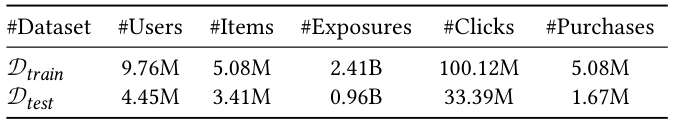
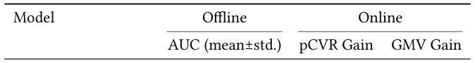
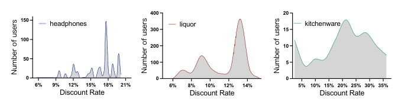
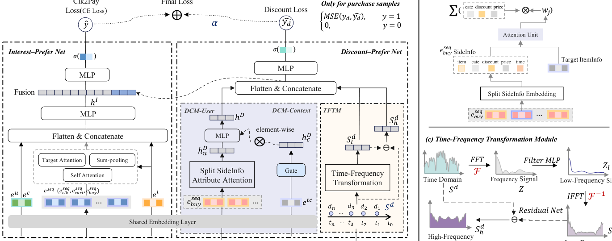
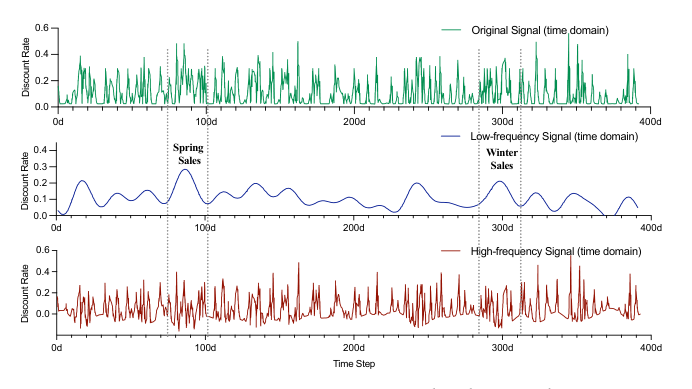

Cheaper is Better: A Discount-Aware Network for Conversion Rate Prediction in E-commerce Recommendation System (越便宜越好：电商推荐系统中面向转化率预估的折扣感知网络)
- 会议/期刊: SIGIR 2026 (第 49 届国际 ACM SIGIR 会议，Melbourne, VIC, Australia)
- 推荐链路定位: 精排 (CTR/CVR Prediction, Post-click CVR)
- 研究方向: CTR/CVR 预估与特征交叉 / 去偏公平与工业架构
- 论文原文: https://arxiv.org/abs/2607.12578v1
- 开源代码: https://github.com/tangrc/DANet
TL;DR (核心速览)
针对电商 CVR 预估中"商品价格分布跨度极大、难以直接建模"的痛点，本文提出用折扣率 (Discount Rate, DR) 替代绝对价格，并设计 Discount-Aware Network (DANet)：用 FFT 时频分解捕捉商品 DR 长期趋势、用 DCM-User/DCM-Context 双重去偏修正用户折扣敏感度与促销周期偏差、用折扣率回归辅助任务强化表征。在阿里天猫工业数据集上离线 AUC 相对提升 1.61%，线上 A/B 测试 pCVR +3.63%、GMV +2.23%，已全量部署于天猫 APP。
Background & Motivation (背景与动机)
- 领域背景与主流范式: Post-click CVR 预估是电商推荐的核心环节，工业界主流范式为"Embedding + 序列兴趣建模 (DIN/DIEN) + MLP"的深度 CTR/CVR 模型，并围绕数据稀疏 (DS)、样本选择偏差 (SSB, ESMM 系列) 与延迟反馈三大经典问题展开。
- 现有方法局限 (Limitations of Prior Work):
- 价格建模困难：商品价格从几元到数万元不等，跨卖家、跨类目分布差异巨大，直接对绝对价格建模难以学到稳定的价格-CVR 关系（PASBR 引入价格但仅模拟价格容忍度）。
- 折扣率不可预知且高度个性化：平台对同一商品标价相同，但用户因参与"满减/凑单"等促销活动，实际成交折扣率差异显著（见图 1 中耳机、酒类、厨具三类商品的用户成交折扣率分布），且 DR 只有在结算时才确定，无法作为静态特征提前获取。
- DR 受三重因素耦合影响：卖家长期定价策略、平台促销活动周期、用户折扣敏感度，现有 CVR 模型无法同时感知这三者。
- 核心挑战 (Key Challenge): 为什么不能简单把价格/折扣率作为普通数值特征拼接进 DIN？因为 (a) 单点折扣率无法反映商品长期价格演化趋势；(b) 用户成交折扣率存在严重的组合购买与促销参与偏差，直接聚合会引入系统性噪声；(c) 不同促销周期（如双 11 大促 vs 平销期）折扣率上限不同，存在周期性偏差。
- 核心洞察与切入点 (Key Insight): 作者通过天猫 90 天真实成交日志的分布观察（图 1）发现：同一商品下不同用户的成交折扣率呈明显多峰分布，说明折扣率是"个性化 + 周期性"的混合信号。由此切入：将 DR 建模为时间序列，用频域分解分离长期趋势与高频噪声，再用双通道去偏网络修正用户与上下文偏差。
Problem Formulation & Method (问题定义与方法架构)
1. 符号定义与输入表征 (Notations & Input Representations)
给定训练集 \(\mathcal{D}=\{(x_i,y_i)\}_{i=1}^{|\mathcal{D}|}\)，样本特征 \(x_i=\{x^{seq}, x_u, x_i, x_c, S_d\}\)，CVR 标签 \(y_i\in\{0,1\}\)（1 表示购买）。目标为预测 \(p_{cvr}=p(y_i=1\mid x_i)\)。五类特征：
- \(x^{seq}\)：用户行为序列（点击序列、加购序列、购买序列），序列长度固定为 \(L\)；
- \(x_u\)：用户画像与偏好统计特征；
- \(x_i\)：商品 ID、类目、品牌及统计特征；
- \(x_c\)：上下文特征（位置、促销信息）；
- \(S_d\in\mathbb{R}^N\)：目标商品折扣率时间序列（本文首次引入 CVR 任务），\(N=400\) 天，覆盖过去约一年。
2. 整体流水线 (Overall Architecture)
DANet 由 Interest-Prefer Net (IPN) 与 Discount-Prefer Net (DPN) 两大部分组成，DPN 内含时频变换模块 (TFTM)、分布修正模块 (DCM-User & DCM-Context) 与监督回归辅助任务。IPN 输出兴趣表征 \(h_I\)，DPN 输出折扣表征 \(h_D\)、低频信号 \(S_d^l\) 与高频信号 \(S_d^h\)，四者拼接后经 MLP 输出 CVR 概率。
flowchart TD
A["输入层: 用户行为序列 x_seq / 用户 x_u / 商品 x_i / 上下文 x_c / 折扣率时序 S_d"] --> B["共享 Embedding 层"]
B --> C["IPN: MHTA 目标注意力 + MLP → h_I"]
B --> D["TFTM: FFT → Filter MLP → IFFT → S_d^l; 残差 S_d^h = S_d - S_d^l"]
B --> E["DCM-User: 购买序列 SideInfo 拆分 + Attribute-Attention → h_Du"]
B --> F["DCM-Context: 促销上下文 GateNet → h_Dc"]
E --> G["h_D = MLP(h_Du) ⊗ h_Dc"]
F --> G
C --> H["拼接 [h_I; h_D; S_d^h; S_d^l] → MLP → ŷ (CVR)"]
D --> H
G --> H
G --> I["辅助任务: 仅购买样本 MSE(y_d, ŷ_d)"]
D --> I3. 核心模块设计与数学原理 (Key Designs & Formulations)
(1) Interest-Prefer Net (IPN)：对用户不同行为序列 \(e_{seq}\) 施加 Multi-Head Target-Attention (MHTA)，以候选商品 \(e_i\) 为 Query、历史行为序列为 Key/Value 动态捕捉兴趣，再与 \(e_u,e_i,e_c\) 拼接送入 MLP：
(2) Time-Frequency Transformation Module (TFTM)：将 DR 时序 \(S_d=[d_1,\dots,d_N]\) 经 FFT 变换到频域，用 MLP \(f_t(\cdot)\) 做信号滤波（保留稳定低频信息、学习各频率分量影响），再 IFFT 回时域得到低频趋势 \(S_d^l\)；高频非平稳分量由残差获得：
物理直觉：低频分量刻画卖家长期定价策略与季节性趋势（如图 3 中"春季/冬季促销"的平滑走势），高频分量则包含促销脉冲与噪声，二者分离后分别作为特征输入，避免噪声污染趋势信号。内存复杂度 \(O(N)\)，FFT 复杂度 \(O(N\log N)\)，\(N=400\)。
(3) Distribution Correction Module (DCM)：分两路去偏。 - DCM-User：购买行为稀疏但强反映折扣偏好，故对购买序列做 SideInfo 拆分（将每个商品 embedding 拆为折扣 \(e_{ij}^d\)、类目 \(e_{ij}^c\)、价格 \(e_{ij}^p\) 三个属性向量），再以候选商品 embedding \(E_A\) 为 query 做 Attribute-Attention：
- DCM-Context：借鉴 PEPNet 思想，用促销上下文特征 \(e_{tc}\) 经 GateNet 生成周期偏差 embedding，与用户折扣表征做逐元素乘：
(4) Supervised Regression Auxiliary Task：为让 DPN 学到"值准确"的折扣表征，构造显式折扣率标签 \(y_d\)，仅在购买样本上做 MSE 回归：
4. 训练目标、负采样与推理复杂度 (Optimization, Negative Sampling & Complexity)
- 损失函数：主任务为 CVR 交叉熵，辅助任务为购买样本上的 MSE，总损失：
其中 \(\text{Loss}_m=-\frac{1}{|\mathcal{D}|}\sum_{(x,y)\in\mathcal{D}}(y\log\hat{y}+(1-y)\log(1-\hat{y}))\)，\(\alpha\) 为缩放超参（最优值由实验确定，原文未给出具体数值）。 - 训练负采样策略：CVR 任务为二分类，无显式负采样；样本来自曝光-点击-购买漏斗日志，购买为正样本、点击未购买为负样本（post-click 设定）。 - 时间与空间复杂度：TFTM 内存 \(O(N)\)、FFT \(O(N\log N)\)，\(N=400\)；DCM-User 注意力复杂度 \(O(L\cdot d)\)。线上部署后响应时间增加 < 5%，作者称对推荐系统可接受。训练使用分布式 TensorFlow 1.4，10 台参数服务器 + 4 张 Nvidia Tesla V100 16GB GPU。
Experimental Setup & Evaluation Protocol (实验设置与评估协议)
- 数据集统计与预处理: 由于缺乏最终成交价数据，业界无公开 DR 数据集，作者自建阿里天猫 2025/08/26–2025/11/25 线上日志采样数据集 \(\mathcal{D}_a\)，按时间切分为不重叠训练集与测试集：

| 数据集 (Dataset) | 用户数 (#Users) | 物品数 (#Items) | 曝光数 (#Exposures) | 点击数 (#Clicks) | 购买数 (#Purchases) |
|---|---|---|---|---|---|
| \(\mathcal{D}_{train}\) (08/26–11/10) | 9.76M | 5.08M | 2.41B | 100.12M | 5.08M |
| \(\mathcal{D}_{test}\) (11/11–11/25) | 4.45M | 3.41M | 0.96B | 33.39M | 1.67M |
- 数据划分方式 (Splitting Strategy): Global Temporal Split（全局时间戳切分），训练集 08/26–11/10、测试集 11/11–11/25，严格按时间先后切分，无未来信息泄露风险；且测试期恰覆盖双 11 大促，可检验模型对促销期分布偏移的泛化能力。
- 排名评测协议 (Ranking Protocol): 本文为 CVR 二分类预估，非排序召回任务，采用 AUC 作为离线指标（全样本打分，无负采样排序协议）；线上采用 pCVR 与 GMV 监控指标。
- 评价指标与显著性检验: 离线 AUC（5 次重复实验，报告 mean±std.）；线上 pCVR Gain、GMV Gain。Embedding 维度：Item ID 64 维，Category/Brand ID 32 维，其他类别特征 8 维；IPN 与 DCM 均用 8 头注意力、隐藏维 128；TFTM 用 32 点 FFT。原文报告了 5 次重复的标准差，但未明确报告配对显著性检验 (p 值)。
Key Experimental Results (核心实验结果)
1. 主实验对比 (Main Results)

| 数据集 | 指标 | DIN (序列基线) | PASBR (价格基线) | CoHHN (价格+兴趣双通道) | 本文 DANet | 相对提升 (Improv.) |
|---|---|---|---|---|---|---|
| \(\mathcal{D}_{test}\) | AUC | 0.8343±0.00132 | 0.8370±0.00021 | 0.8337±0.00253 | 0.8479±0.00163 | +1.61% (vs. IPN-Base 0.8345) |
| 线上 | pCVR Gain | -0.01% | +1.62% | -0.74% | +3.63% | — |
| 线上 | GMV Gain | -0.04% | +0.79% | -0.91% | +2.23% | — |
关键观察：(1) IPN-Base 与 DIN 基本持平，证明 IPN 基线有效；(2) PASBR 引入价格因素成为次优方法，验证价格对购买决策的影响；(3) CoHHN 的双通道聚合在天猫场景下反而劣于 DIN；(4) DANet 离线与线上均显著领先次优方法。
2. 消融实验与控制变量分析 (Ablation Study)
| 配置 | AUC (mean±std.) | 线上 pCVR Gain | 线上 GMV Gain |
|---|---|---|---|
| IPN-Base | 0.8345±0.00062 | 0% | 0% |
| + DCM-User (A) | 0.8361±0.00131 | +0.85% | +0.22% |
| + DCM-Context (B) | 0.8357±0.00276 | +0.59% | +0.08% |
| + TFTM (C) | 0.8389±0.00052 | +2.65% | +1.60% |
| + Auxiliary task (D) | 0.8347±0.00048 | +0.30% | +0.02% |
| DANet (A&B&C&D) | 0.8479±0.00163 | +3.63% | +2.23% |
贡献排序：TFTM > DCM-User > DCM-Context > Auxiliary task。TFTM 贡献最大（单独 +2.65% pCVR），说明引入商品 DR 长期演化趋势的建模范式对购买导向学习最关键；DCM-User 与 DCM-Context 证明用户与上下文偏差建模的必要性；辅助任务通过显式 DR 标签帮助学习更好的折扣表征。注意：消融为逐模块累加式（非严格参数量对齐的 leave-one-out），原文未报告参数量匹配对照。
3. 稀疏度/冷启动分桶与超参敏感度 (Sparsity Buckets & Hyperparameters)
- 用户/物品交互频次分桶表现: 原文未报告长尾/冷启动分桶实验。
- 关键超参数敏感度: 原文仅提及 \(\alpha\) 为缩放超参、最优最大值由实验确定，但未给出 \(\alpha\) 的具体取值与敏感度曲线；FFT 点数固定为 32，\(N=400\)。
- 线上 A/B 测试结果 (Online A/B Test): 在天猫 APP 首页进行线上 A/B 测试，DANet 相对 IPN-Base 取得 pCVR +3.63%、GMV +2.23%；此外折扣商品曝光占比 (PVR) 从 7.56% 提升至 11.14%（相对提升 47.32%），说明模型能主动为高折扣商品争取更多曝光。模型已成功全量部署于天猫 APP（千万级 DAU），响应时间增加 < 5%。
4. 案例分析与可视化 (Case Study)

图 1 展示了耳机、酒类、厨具三类商品在 90 天内用户实际成交折扣率的分布，同一商品下不同用户折扣率呈多峰分布，直观说明折扣率的个性化与促销参与偏差，是 DCM-User 设计的直接动机。

图 2 给出 DANet 整体框架：IPN 负责兴趣建模，DPN 由 TFTM、DCM-User、DCM-Context 与监督回归辅助任务构成，最终拼接输出 CVR 概率。

图 3 对 1000 个代表性样本平均后可视化 \(S_d\)、\(S_d^l\)、\(S_d^h\)：低频信号呈现平滑趋势（可辨识"春季/冬季促销"周期），高频信号含更多噪声，验证 TFTM 有效分离趋势与噪声，与设计预期一致。
Highlights, Limitations & Critiques (亮点、局限与审稿级批判)
- 核心亮点与可迁移性:
- "折扣率替代绝对价格"的建模视角具有强工业可迁移性——将难以归一化的价格信号转化为有界、可比较的比率信号，可推广到外卖、本地生活、机票酒店等动态定价场景。
- FFT 时频分解用于用户/商品时序特征是一个轻量且可解释的算子（\(O(N\log N)\)），可迁移到用户活跃度周期、商品销量季节性等任意长时序特征建模。
- SideInfo 拆分 + Attribute-Attention 将购买序列按折扣/类目/价格属性解耦注意力，思路可复用到多属性序列建模。
- 完整的离线 + 线上 A/B + 全量部署闭环，工业说服力强。
- 局限性与审稿视角批判 (Critical Limitations):
- 数据集不可复现：核心实验依赖阿里内部天猫日志（含最终成交价），业界无公开 DR 数据集，开源代码虽提供但数据无法获取，复现性受限；论文仅 5 页（short paper），实验规模有限。
- 评估协议偏弱：仅报告 AUC 单指标，缺少 GAUC、LogLoss、校准误差等 CVR 任务常用指标；未报告配对显著性检验（虽有 5 次重复 std，但 DANet 的 std 0.00163 大于 PASBR 的 0.00021，提升的统计稳健性需更严格检验）。
- 消融不严谨：采用逐模块累加而非 leave-one-out，且未做参数量对齐或计算量匹配对照，TFTM 的增益可能部分来自额外参数容量。
- 超参透明度不足：辅助损失权重 \(\alpha\) 的最优值、FFT 点数选择依据均未给出敏感度分析。
- 时序泄露边界模糊：\(S_d\) 为 400 天滑动窗口，测试期（双 11）的 DR 序列是否包含测试期当天及之后的信息、训练/测试窗口如何对齐，原文未明确说明，存在潜在特征穿越风险。
- 理论深度有限：DCM-Context 直接借用 PEPNet 的 GateNet 结构，创新性更多体现在特征工程与模块组合层面。
Rating (四维评分)
- 方法创新性 (Novelty): ⭐⭐⭐⭐
- 评估协议与实验扎实度 (Protocol & Experiments): ⭐⭐⭐
- 写作与数学规范度 (Clarity & Rigor): ⭐⭐⭐⭐
- 工业落地与复现价值 (Industrial & Practical Value): ⭐⭐⭐⭐